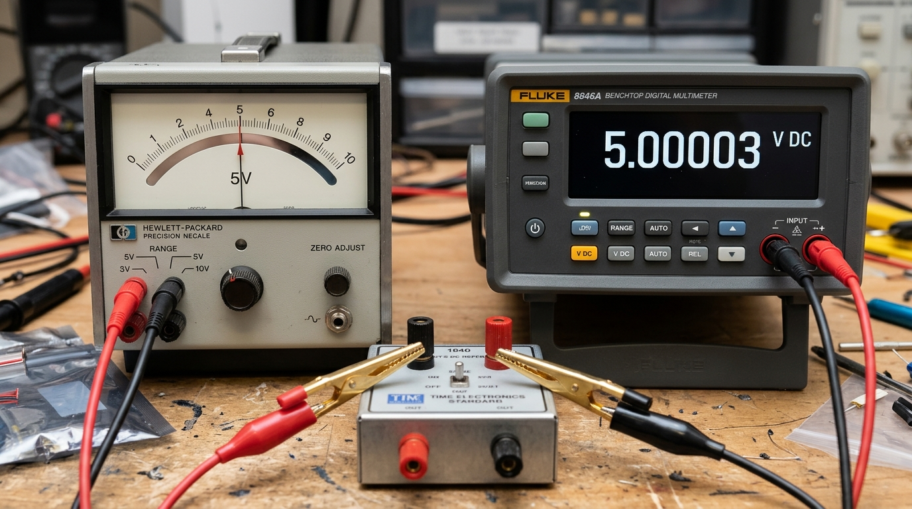
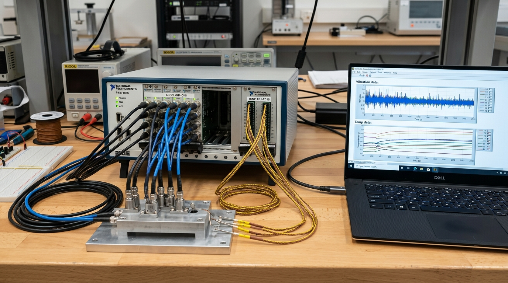

Methods · Analog vs. Digital · DAQ Pipeline · Calibration · Uncertainty · Intrusive Sensing · Electrical Safety
7 Core Topics Covered Step-by-Step
Key Competencies & Practical Skills
Every Engineering Decision Relies on Good Data
How Physical Action Becomes Useful Information
Section 1.1 · Direct Comparison · Deflection · Null-Balance
All measurements compare an unknown quantity against a known standard.
Comparing an Unknown Against a Known Standard
Side-by-Side Comparison with Zero Energy Transduction
Everyday Mechanical Standards
Why Can We Not Use Direct Comparison for Everything?
The Unknown Quantity Pushes a Pointer Against a Spring
Opposing Forces in Perfect Equilibrium
Fast, Real-Time Readings in Vehicles and Factories
Measuring a System Steals Energy From the System!
Checking Motorcycle Tire Pressure Lets Air Escape!
Limit of Analogy: In a huge truck tire, the lost air is negligible. But in a tiny bicycle tube, repeated testing can deflate the tire noticeably.
Zero Energy Drawn at the Moment of Measurement
At the Balance Point, Zero Energy Flows into the Detector
Figure 1 · Direct Comparison vs. Deflection vs. Null-Balance
Choosing the Right Method for the Job
Concept Check 1.1
Why does a laboratory null-balance potentiometer measure the open-circuit voltage of a small battery more accurately than a common moving-coil (deflection) voltmeter?
Section 1.2 · Continuous Pointers vs. Discrete Numbers · Resolution & Sampling
Analog represents values as continuous physical movement; digital represents values as discrete numbers.
Continuous Physical Indication

Mirrored-scale analog needle voltmeter alongside a 6-digit OLED digital multimeter
Why Human Eyes Misread Analog Pointers
Direct, Unambiguous Numeric Readouts
Separating Resolution from Accuracy
How Computers Divide a Voltage Range into Distinct Steps
The Smallest Change the Digital Screen Can Detect
Step-by-Step Numerical Practice
Problem: A digital voltmeter uses a 10-bit Analog-to-Digital Converter (N = 10) to measure voltages between 0.0 Volts and 5.0 Volts (Full-Scale Range = 5.0 V). Calculate the smallest voltage change (resolution step size ΔV) that this meter can detect.
The Inevitable Rounding Error of Digital Steps
Figure 2 · Smooth Wave vs. Digital Staircase
How Often Must We Read the Voltage?
The Universal Rule for Digital Sampling
When Fast Frequencies Disguise Themselves as False Low Frequencies
Placed Strictly in Front of the ADC
Concept Check 1.2
An engineer is measuring high-pitch vibration from an industrial turbine with a maximum frequency of 5,000 Hz (5 kHz). What is the minimum sampling rate required by the Nyquist criterion to prevent aliasing?
Section 1.3 · The Complete Signal Chain From Sensor to Computer Screen
A DAQ pipeline converts raw physical phenomena into clean, standardized digital information.
Why Computers Cannot Read Sensors Directly

Multi-channel industrial DAQ hardware chassis with BNC and thermocouple inputs streaming to workstation
Figure 3 · The 6 Core Functional Blocks
Capturing Physics and Turning it into Electricity
Preparing the Weak, Noisy Signal for the Computer
Sharing Resources and Freezing the Voltage in Time
From Voltage to Numbers, Graphs, and Alarms
Concept Check 1.3
In a factory temperature monitoring system, why is a Sample-and-Hold (S/H) circuit placed immediately before the Analog-to-Digital Converter (ADC)?
Section 1.4 · Establishing Trust in Measurements · Sensitivity · Drift · Hysteresis
Calibration is the foundation of measurement integrity and legal traceability.
Comparing an Instrument Against a Trusted Standard
"An operation that establishes a relation between the quantity values provided by measurement standards and corresponding indications of the instrument under test."
In plain workshop English: You apply exact, certified input values to the instrument (e.g. exactly 1.00 bar, 2.00 bar, 3.00 bar) and record what the instrument pointer indicates. If the pointer disagrees, you adjust the meter until it matches the standard.
Ref: ISO/IEC Guide 99 (VIM Metrology Standard)Physical Wear, Temperature, and Aging
How Engineers Visualize Instrument Response
How Far Does the Needle Swing for Each Unit of Input?
Step-by-Step Numerical Practice
Problem: A factory pressure sensor is calibrated in the workshop. When the applied input pressure increases from 2.0 bar to 6.0 bar, the sensor output voltage rises from 1.0 Volt to 3.0 Volts. Calculate the static sensitivity of this pressure sensor.
The Two Ways Temperature Alters a Calibration Line
The Reading is Different Going Up vs. Coming Down!
Figure 4 · Ascending vs. Descending Response Curves
How Engineers Quantify Hysteresis for Quality Control
Figure 5 (Right) · Why Repeatable Does NOT Mean Correct
The Minimum Nudge Needed to Move a Sticky Needle
Figure 4B · Selecting Calibration Complexity to Eliminate Drift & Non-Linearity
Adjusting Zero Error When Sensitivity Slope Is Already Known
Constant Additive Bias Subtraction Across the Operating Range
Hydropower Turbine Bearing Temperature Verification
Problem: A digital K-type thermocouple thermometer is immersed in a stirred 0.00 °C crushed-ice reference bath and reads +1.85 °C. Later, inserted into a hydropower Pelton turbine guide-bearing oil sump, it indicates 68.40 °C. Determine: (a) the zero offset error, (b) the calibration equation, (c) the true bearing oil temperature, and (d) the percentage error avoided.
Correcting Both Baseline Offset AND Slope Sensitivity Simultaneously
Computing Actual Sensitivity (S), Zero Intercept (y0), and True Input (x)
Zero & Span Recovery Using a Deadweight Pressure Tester
Problem: A 0–100 bar hydraulic pressure transducer (factory nominal 0–10 V, i.e. 0.100 V/bar) is tested on a deadweight calibrator at two reference loads: (10.0 bar, 1.45 V) and (90.0 bar, 8.65 V). In field operation, the transducer outputs 6.85 V. Calculate: (a) actual sensitivity S, (b) zero-pressure intercept y0, (c) true calibrated pressure, and (d) error avoided vs. factory nominal.
Testing N ≥ 5 Standards Across Ascending & Descending Cycles
Ordinary Least-Squares (OLS) Best-Fit Line and Maximum Residual Error
Determining Best-Fit Equation, % Non-Linearity & Field Load
Problem: A 0–8 kN strain-gauge bridge load cell yields outputs yi = [0.10, 2.04, 4.12, 5.98, 8.06] mV at certified deadweight loads xi = [0, 2, 4, 6, 8] kN (N = 5). Find: (a) best-fit sensitivity m and intercept c, (b) peak residual and % Non-Linearity (% FSO), and (c) true force if field output is 5.053 mV.
Engineering Trade-offs Across Single-Point, Two-Point & Multi-Point Protocols
Tests 1 known reference value to compute and remove constant zero-offset shift Δ_offset.
Mechanism: Fixes Zero Drift ONLY; assumes factory sensitivity slope S is fixed & linear.
Examples: Bathroom/bench scale Tare button; 0.00 °C ice-bath thermometer check; atmospheric vent DP zeroing.
Tests 2 endpoints (typically ~10% and ~90% span) to compute true sensitivity slope S and intercept y0.
Mechanism: Fixes BOTH Zero Offset & Span Slope drift simultaneously for linear sensors.
Examples: 4–20 mA pressure transmitters (0 & 10 bar); pH meters (pH 7.00 & 4.01 buffers); tank level meters.
Tests N ≥ 5 points ascending/descending using OLS regression or polynomial lookup tables.
Mechanism: Fixes Zero, Span, Non-Linearity bowing & quantifies Hysteresis + Random scatter.
Examples: Deadweight pressure calibrators; NTC thermistors; orifice flowmeters; structural load cells.
Concept Check 1.4B · Diagnosing Calibration Blind Spots
A plant technician immerses an aging thermocouple probe in a 0.00 °C ice bath and performs a Single-Point zero adjustment so it reads 0.00 °C accurately. Later, on a certified 300.0 °C steam calibration oven, the same probe reads 312.0 °C. What error occurred and how must it be fixed?
Concept Check 1.4A
A technician measures a certified 50.00 kg weight 5 times using a workshop digital scale. The readings are: 53.21 kg, 53.20 kg, 53.22 kg, 53.21 kg, 53.20 kg. How would you describe this scale?
Section 1.5 · Gross, Systematic & Random Errors · Statistics & ISO GUM Evaluation
To report a professional measurement, you must state both the measured value and its uncertainty.
The Difference Between a Mistake and Inherent Doubt
Gross, Systematic, and Random
Mistakes That Can and Must Be Avoided
Consistent, Repeatable Offsets in Magnitude and Sign
Unpredictable Scatter Governed by Probability
The Average is the Best Mathematical Estimate of the True Value
How Wildly Are the Readings Scattering Around the Average?
How Confident Are We in the Average Value?
The Most Dangerous Mistake in Lab Testing
Evaluating Uncertainty from Manufacturer Datasheets
How Engineers Combine Type A and Type B Uncertainties
Step-by-Step Solved Problem
Problem: A technician measures the temperature of an industrial furnace 9 times (N = 9). The sample mean is 150.0 °C and the sample standard deviation is s = 0.60 °C. The manufacturer certificate states the thermometer tolerance is ±0.30 °C. Calculate: (1) Type A uncertainty, (2) Type B uncertainty, (3) Combined uncertainty uc, and (4) Expanded uncertainty U for 95% confidence (k = 2).
Concept Check 1.5
A student reads the calibration sticker on a workshop pressure gauge which states: "Tolerance ± 0.60 bar". What type of uncertainty evaluation is this?
Section 1.6 · Touching vs. Observing From Outside · Circuit & Flow Loading
Intrusive sensors penetrate the process; non-intrusive sensors measure from outside without contact.
The Sensor Penetrates Directly into the Process Medium
Turbulence, Leaks, and Energy Losses
How an Intrusive Electrical Meter Distorts Circuit Voltage
Calculating the Measured Voltage with Meter Resistance
Step-by-Step Numerical Practice
Problem: A circuit has an open-circuit voltage of Vtrue = 10.0 Volts and an internal source resistance of Rs = 100 kΩ (100,000 Ω). A cheap analog voltmeter with an internal resistance of Rm = 100 kΩ is connected across the terminals. What voltage will the meter indicate, and what is the percentage loading error?
Ammeters Must Have Near-Zero Internal Resistance
Measuring Without Touching or Disturbing the Medium
Figure 6 · Physical Pipe Flow & Electrical Loading Comparison
When to Choose Which Method
Section 1.7 · Protecting Equipment and Lives · Ground Loops · Optocouplers · IEC CAT Ratings
Safety is non-negotiable: proper grounding and galvanic isolation protect both delicate sensors and human lives.
The 0-Volt Safety Anchor for Buildings and Machines
When "Zero Volts" is NOT Zero Volts Everywhere!
Loud Audio Hum, Noisy Sensor Data, and Melted Cables
Breaking the Continuous Metal Path
Electricity → Light → Electricity
Figure 7 · Loop Current Hazard vs. Optical Barrier Protection
Figure 7 (Right) · Matching Tool Safety to Electrical Danger
From Low-Voltage Electronics (CAT I) to Utility Power Poles (CAT IV)
Never Use a Low-CAT Meter on High-CAT Circuits!
Concept Check 1.7
An instrumentation engineer must connect a computer data acquisition card to a vibration sensor mounted on a high-voltage 3-phase pump motor 150 meters away in another building. What should the engineer do to prevent noise hum and protect the computer?
Review of Core Principles Across All 7 Sections
Clean Open Formulas for Exam Preparation
Recommended Textbooks & Course Materials